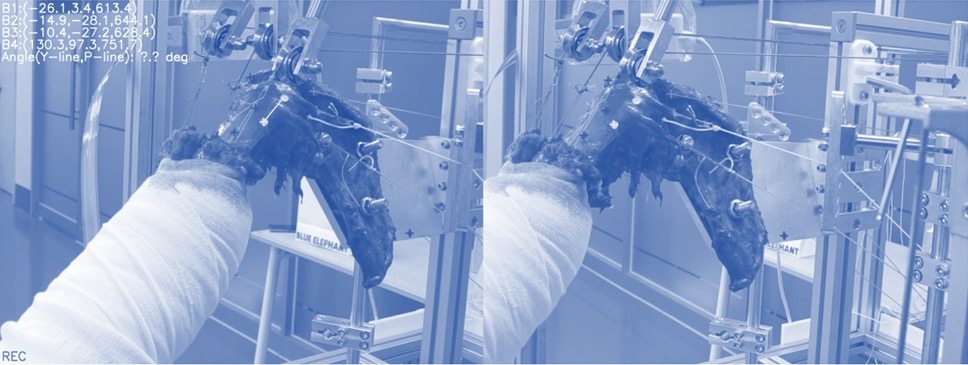
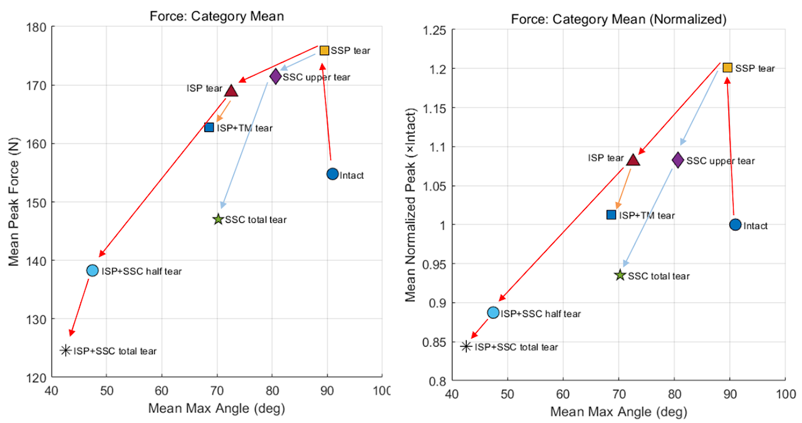
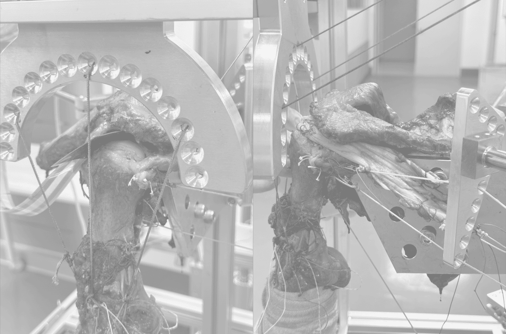
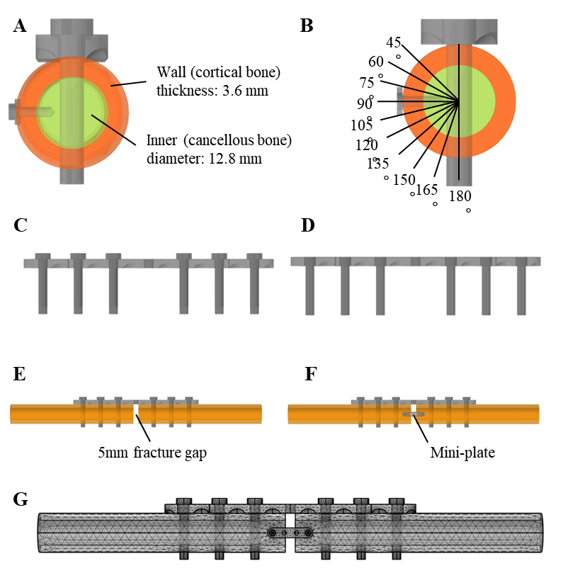
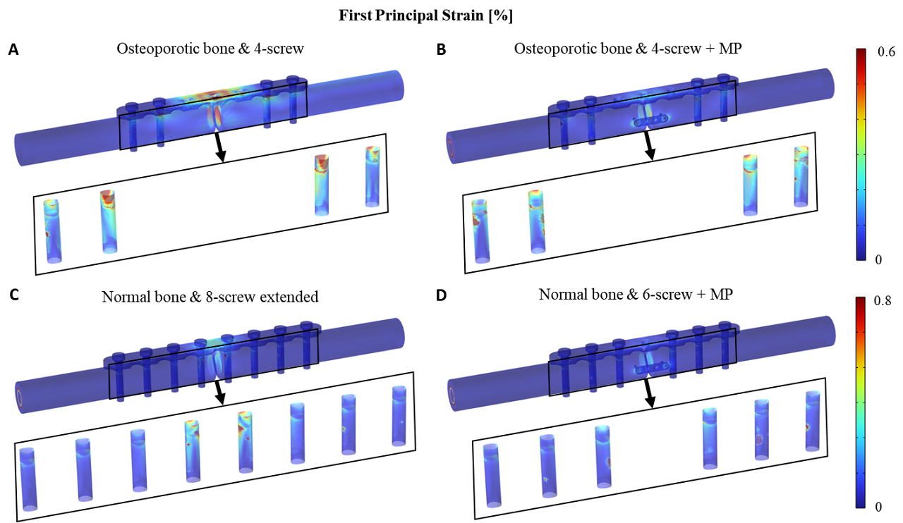
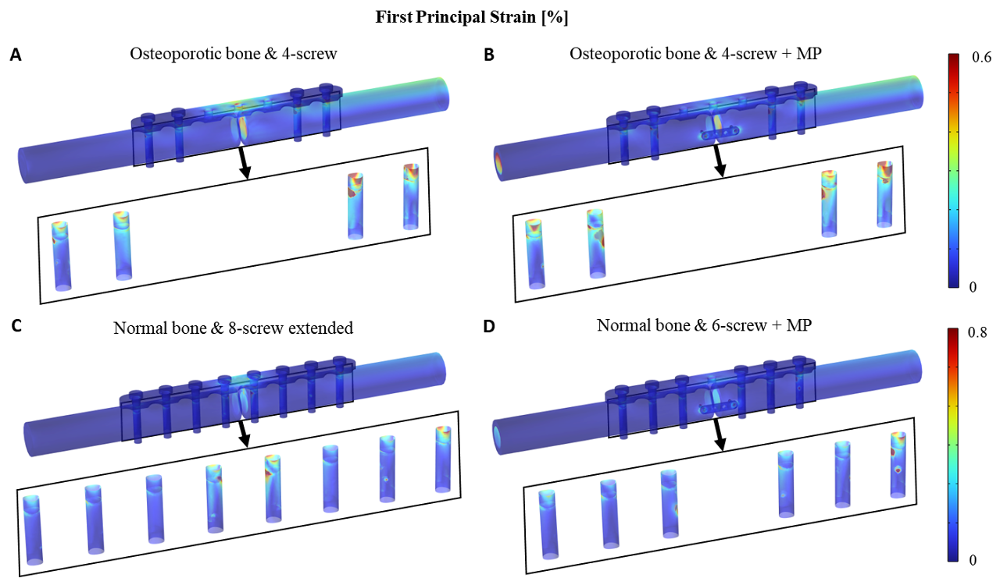
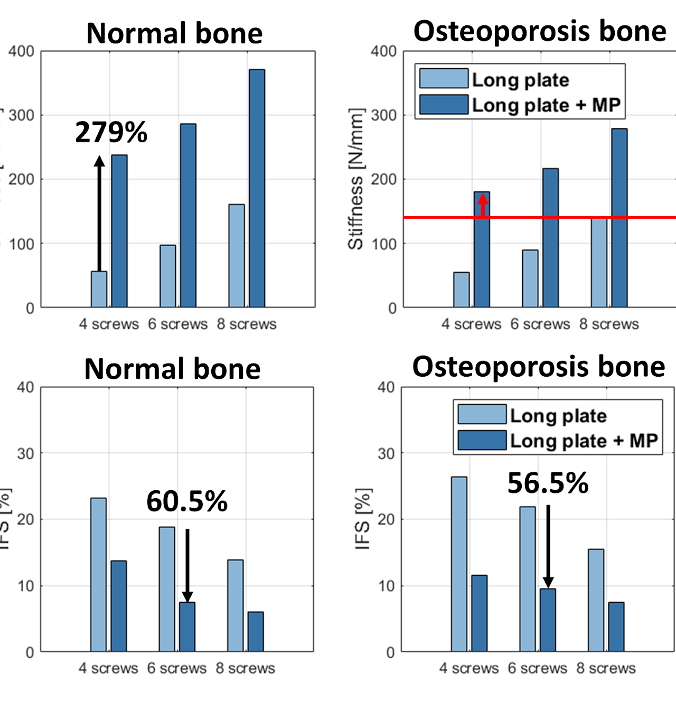
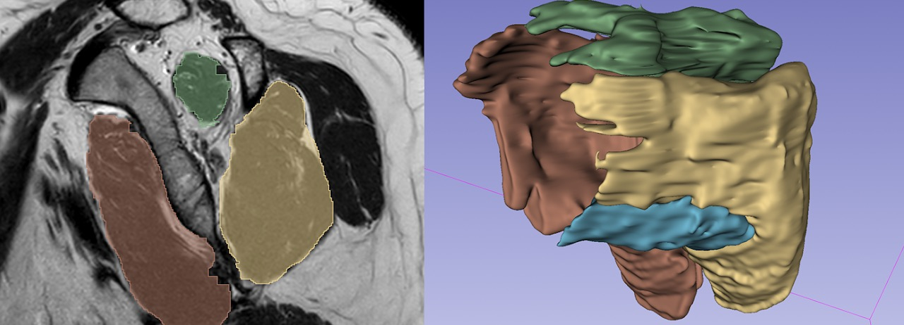

연구 · Shoulder Mechanics
어깨는 우리 몸에서 가장 넓게 움직이는 만큼 다치기도 쉽습니다. 우리는 생체역학 실험 장치를 직접 설계해 회전근개 파열 수술의 효과를 검증하고, 골절 고정 수술의 고정력을 구조해석으로 높이며, MRI·X-ray 영상을 AI로 분석해 재파열 위험을 예측합니다. 정형외과와 협업하는 임상 밀착형 연구입니다.
실제 어깨를 모사한 실험 장치로 수술 기법의 효과를 정량적으로 비교합니다.



나사·미니플레이트 조건을 바꿔가며 고정력을 구조해석으로 최적화합니다.




영상에서 병변을 자동으로 인식하고 재파열 위험을 예측합니다.
